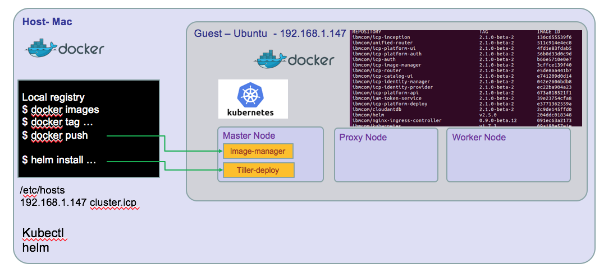
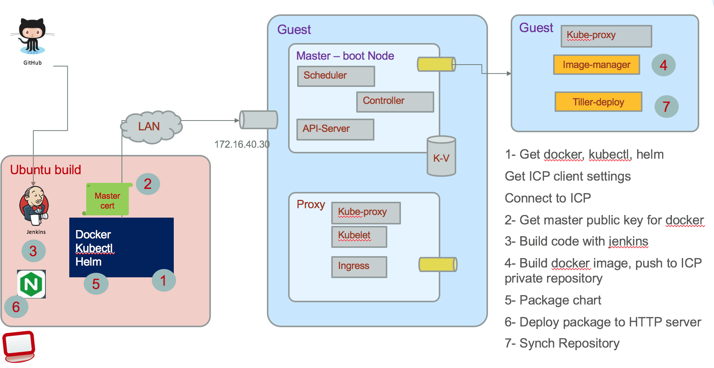

Install a development environment with IBM Cloud Private 2.1
For staging purpose, we are using a ICP EE deployment in a five virtual machine cluster. In this note we are presenting a single virtual machine configuration based on Ubuntu 64 bits v16.10 and how to install ICP 2.1.0.2 on it.
Updated 04/23/2018
The developer environment may look like the following diagram, for a developer on Mac and a VM ubuntu image (Windows will look similar) 
There is a nice alternate solution to get an ICP single VM up and running in fe minutes by using a Vagrant file: Clone this github and do a vagrant up, 15 minutes later you have your environment with one proxy-master node and 3 worker nodes. Excellent!
If you need to access the dockerhub IBM public image, use docker hub explorer and search for ibmcom
Preparing your guest machine
Install ubuntu
Follow your VM player instruction to create a virtual machine and access an ubuntu 16.10 .iso file
- The expected minimum resource are: CPUs: 2 Memory: 16GB Disk: 100GB (Thin Provisioned)
-
Install ubuntu following the step by step wizard, create a user with admin privilege. The ICP installation need root access and ssh connection to the different host nodes that are part of the topology. In the case of one VM you still need to do some security settings and make the system be passwordless with security key.
-
Login as the newly create user
- Change root user password
$ sudo su - $ passwd
-
Update the ubuntu OS with last package references
apt-get update
-
Install Linux image extra packages
apt-get install -y linux-image-extra-$(uname -r) linux-image-extra-virtual
- Install python
$ apt-get install -y python-setuptools $ easy_install pip $ pip install docker-py
-
Disable firewall if enabled
$ ufw status $ sudo ufw disable
-
Boot and log as root user
-
Install NTP to keep time sync
apt-get install -y ntp sytemctl restart ntp # test it ntpq -p
Configure ssh for remote access
Install openssh, and authorize remote access
sudo apt-get install openssh-server systemctl restart ssh
- Create ssh keys for your user and authorize ssh
be sure the following parameters are enabled
# create rsa keys with no passphrase $ ssh-keygen -b 4096 -t rsa -P ''
Then restart ssh daemon:$ vi /etc/ssh/sshd_config PermitRootLogin yes PubkeyAuthentication yes PasswordAuthentication yes
Copy the public key to the root user .ssh folder$ systemctl restart ssh
Then you should be able to ssh root user to the guest machine.$ ssh-copy-id -i .ssh/id_rsa root@ubuntu
Install docker
The developer's machine and VM need both to have docker or at least the VM needs it. To access the cluster environment you need kubectl* command line interface and hosts configuration to match the configuration defined during the ICP install.
If you do not have docker install on your development machine, we will not describe it again ;-). See docker download.
-
Install docker on the ubuntu machine
-
Install docker repository
$ apt-get install -y apt-transport-https ca-certificates curl software-properties-common
-
Get the GPG key
$ curl -fsSL https://download.docker.com/linux/ubuntu/gpg | apt-key add - apt-key fingerprint 0EBFCD88 -
Setup docker stable repository
$ add-apt-repository "deb [arch=amd64] https://download.docker.com/linux/ubuntu $(lsb\_release -cs) stable” $ apt-get update $ apt-get install -y docker-ce
-
Validate it runs
docker run hello-world
- Add user to docker group
# Verify docker group is defined $ cat /etc/group # add user $ usermod -G docker -a usermod # re-login the user to get the group assignment at the session level
When using a build server, you also need docker to be able to build the different docker images of our solution. The figure below illustrates what need to be done: 
A Jenkins server implements different pipeline to pull the different project from github, executes each jenkins file to build the different elements: compiled code, docker image, helm charts, and then push images and helm charts to ICP.
Install Kubectl
You need to have kubectl on your development computer and on any build server. * Install kubectl from IBM image.
docker run -e LICENSE=accept --net=host -v /usr/local/bin:/data ibmcom/kubernetes:v1.7.3 cp /kubectl /data
Verify kubectl runs locally. We will get the cluster information to remote connect to it once ICP is installed.
Install helm
IBM Cloud Private contains integration with Helm that allows you to install the application and all of its components in a few steps.
This can be done as an administrator using the following steps:
1. Click on the user icon on the top right corner and then click on Configure client.
2. Copy the displayed kubectl configuration, paste it in your terminal, and press Enter on your keyboard.
3. Initialize helm in your cluster. Use these instructions to install and initialize helm.
Install IBM Cloud Private CE on the ubuntu machine
Verify the public docker hub images available: go to docker hub explorer and search for ibmcom/icp-inception
- Get the ICP installer docker image using the following command
```
$ sudo su -
$ docker pull ibmcom/icp-inception:2.1.0
Digest: sha256:f6513... Status: Downloaded newer image for ibmcom/icp-inception:2.1.0 $ $ mkdir /opt/ibm-cloud-private-ce-2.1.0 $ cd /opt/ibm-cloud-private-ce-2.1.0
$ docker run -e LICENSE=accept \ -v "$(pwd)":/data ibmcom/icp-inception:2.1.0 cp -r cluster /data ```The following command extracts configuration file under the *cluster* folder by mounting local folder to /data inside the container:
- In the cluster folder there are multiple files to modify: config.yaml, hosts, and ssh-keys
- hosts: As we run in a single VM, the master, proxy and worker node will have the same IP address. So get your VM's IP address using the command:
$ ip address
- Modify the hosts file
[master] 172.16.251.133 [worker] 172.16.251.133 [proxy] 172.16.251.133
- Modify the config.yaml file using administrator privilege (so sudo) by specifying a domain name and cluster name. Also set the loopback dns flag so the server will run in single VM without error.
loopback_dns: true cluster_name: mycluster cluster_domain: mycluster.domain
- Copy security keys you have created when configuring your linux environment to the ssh_key file
$ cp ~/.ssh/id_rsa ./ssh_key
- Deploy the environment now
# from the cluster folder $ sudo docker run -e LICENSE=accept --net=host --rm -t -v "$(pwd)":/installer/cluster ibmcom/icp-inception:2.1.0 install
- Verify access to ICP console using http://ipaddress:8443 admin/admin You should see the dashboard as in figure below:
Image Repositories
To deploy application you need to package as docker image and push them within a docker repository, and then define kubernetes deployment configuration using Helm charts and install those charts to a helm Tiller server.
Docker repository
You have two choices: using the private image repository deployed in ICP or create one private docker image repository somewhere and declare it inside ICP.
Access to ICP private docker repository
You need the public ssh keys of the master-node: * connect to the VM where the master node runs, get the ip address, and the ca.crt with commands like below:
# on client machine $ cd /etc/docker # create a directory that matches the name of the cluster as defined in the config.yaml of ICP. 8500 is the port number. $ mkdir certs.d/myclyster.icp:8500 $ cd certs.d/myclyster.icp:8500 $ scp root@masternodevmipaddress:/etc/docker/certs.d/mycluster.icp:8500/ca.crts .
So you copied the public key. An administrator could have sent it to you too.
- Add an entry for mycluster.icp in your /etc/hosts
172.16.5.xxx master.cfc
On your computer you need to restart systemd and docker
systemctl daemon-reload service ssh restart service docker restart
- Normally you should be able to login to remote docker with a userid known to the master node VM: admin is the default user.
docker login mycluster.icp:8500 User: admin Password:
Define a remote helm repository
ICP supports referencing remote helm charts repository, but it also includes internal repository as illustrated in following figure:

The hybrid integration set of projects has each component creating its own helm packaging (tgz files) and persisted into the current project charts folder. An index.yaml file defines the components part of this repository.
Connect kubectl to remote cluster-master
- Access the ICP kubernetes cluster information from the ICP Console. From the Client configuration menu under your userid on the top right of the main console panel to access the configuration. Then copy and paste in a script or in a terminal to execute those commands:
kubectl cluster-info
Kubernetes master is running at https://192.168.27.100:8001 catalog-ui is running at https://192.168.27.100:8001/api/v1/proxy/namespaces/kube-system/services/catalog-ui Heapster is running at https://192.168.27.100:8001/api/v1/proxy/namespaces/kube-system/services/heapster image-manager is running at https://192.168.27.100:8001/api/v1/proxy/namespaces/kube-system/services/image-manager KubeDNS is running at https://192.168.27.100:8001/api/v1/proxy/namespaces/kube-system/services/kube-dns platform-ui is running at https://192.168.27.100:8001/api/v1/proxy/namespaces/kube-system/services/platform-ui To further debug and diagnose cluster problems, use 'kubectl cluster-info dump'.
Verify Helm is connected to Tiller server running on ICP
If you get the kubectl connected to ICP cluster (as presented in previous figure), then the following command should give you the version of the Tiller server running in ICP.
$ helm version
Client: &version.Version{SemVer:"v2.5.0", GitCommit:"012cb0ac1a1b2f888144ef5a67b8dab6c2d45be6", GitTreeState:"clean"}
Server: &version.Version{SemVer:"v2.5.0", GitCommit:"012cb0ac1a1b2f888144ef5a67b8dab6c2d45be6", GitTreeState:"clean"}